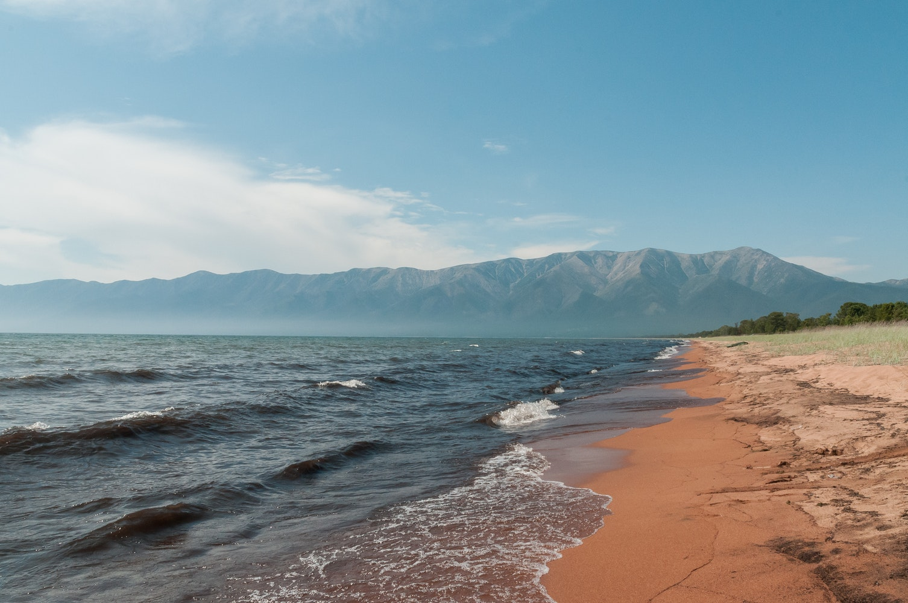
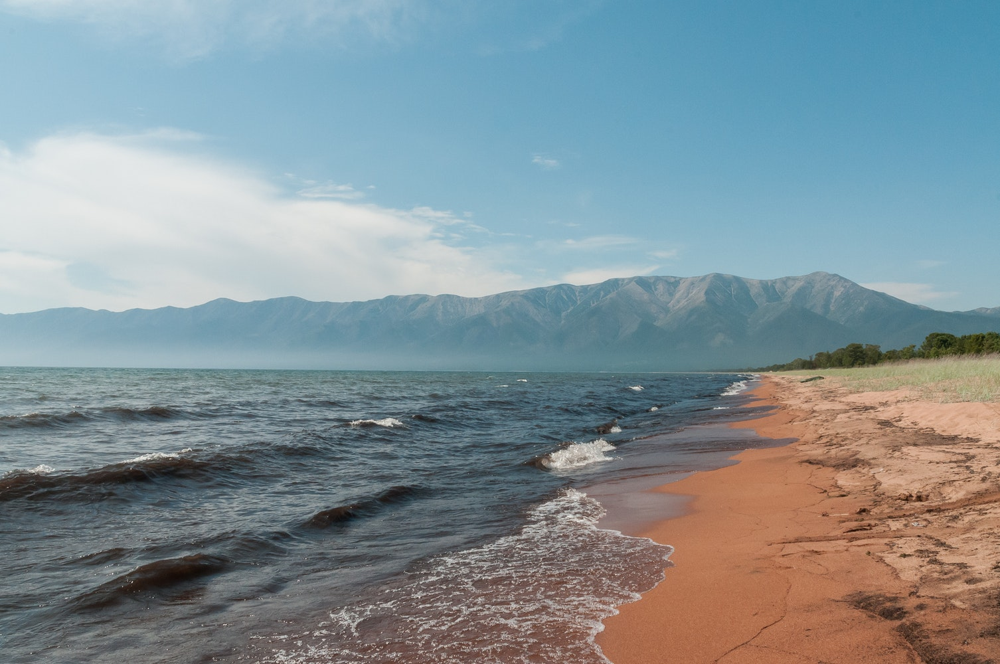

Ru
En
Путешествия по России
Настоящая страна не в выпусках новостей, а здесь.

Ваша полка - верхняя
Чего мы там не видели?
По вопросам ВЦИОМ, 95% россиян мечтают куда нибудь поехать, но только 36% планируют провести отпуск в родной стране. Мол чего мы тут, дома, не видели? На самом деле, Россия это целая вселенная с ласковым морем юга, густыми лесами Саян и суровыми льдами плато Путорана. А еще увидеть все эти красоты можно без милионов на счету, загранпаспорта и многочесовых перелетов. Как, например, Вера Башмакова - смелая молодая мама, которая взяла в охапку троих детей, усадила их всвою "Ладу" и проехала 20 тысяч километров по родной стране. Мы выбрали и описали некоторые интересные места, достойные вашего отпуска.


 



Куршская коса
URL
park-kosa.ru
Здесь, посреди лесов и песчаных дюн, вы сможите увидеть два водных горизонта - спокоийного Куршского залива с одной стороны и подернутого рябью волн Балтийского моря с другой. Уникальная природная зона на краю российского анклава.
На этом Калиниградская область не заканчивается. Для путишественника и исследователя там же по соседству - самая западная точка России, Болтийская коса, - и немецкое наследие россыпи не большых приморских городов. Атмосфера здешних мест исключает суету, окуная в спокойствие природы и запах стального, прохладного моря.
Кольский

Почти весь полуостров находится за Полярным кругом. Саамская тундра, от которой на юг - тайга, а на север - ледовитый океан, прикидывающийся Баренцывым морем.
Возможно вы смотрели Звягенцева и даже слышали историю арктического фестиваля в Тереберки. Возможно, слово "Хабины" не осталось под снегом школьных воспоминаний об уроках географии. Возможно вы не интерисовались пронизывающей земную кору сверхглубокой скваженой, а от аппатитов вас давно накрывает аппатия. Но ваша мечта увидеть северное сияние начинает сбываться с билетом в Мурмонск.
Алтай
URL
Facebook
Алтай - одно из красивейших мест в России. В первую очередь из за гор: если ехать вдоль хребта, вы увидие склоны, усыпанные соснами, гоные реки и озера. А если вы откроете окна в автомобиле, сможите познакомится с невидимым чудом здешних мест - горным воздухом.
Климат на Алтае умеренный, поэтому ехать суда лучше всего летом. Вы увидите все разнообразие местной флоры и фауны. По лесам Алтая бродят лоси, над хребтами летают орлы, а на равнинах посутся слоны. И знаменитие монулы - тоже обитатели Алтайского края.
Зимний байкал

Всем известен Байкал как крупнейшее озеров мире. Многие также знают, что это самый большой источник пресной воды и одно из крупнейших мест в России.
Конечно, это все так. Но Байкал еще одно идеальное место для соревнований по скиорингу. Это такой вид спорта, когда лыжник привязывает себя к мотоцыклу, и тандем старается развить как можно большую скорость на льду. В марте 2019 года на фестивале "Балтийская миля" был поставлен мировой рекорд - 197.011 км/ч.
Карелия

Сибирь заканчивается не на Урале, а в Карелии: образующая тайгу сибирская листвинница не растет западнее Волдозера. Зато здесь она вымахивает на 30 метров - леса карельских национальных парков из-за непроходимых болот не когда не знали топора. Некоторым соснам уже больше чем полтысячилетия. Прикоснитесь к живому существу, видевшему солнце раньше, чем увидал его Иван Грозный. В десвенном лесу на сотни киллометров не встретишь тропы. А на редких тропинках деревья в паре метров то земли медвежьеми когтями. Что бы все знали кто, туту хозяин.
До Байкала «на собаках »
По мотивам учебной темы о Транссибе - путишествие от сталицы до Байкала на электричках.